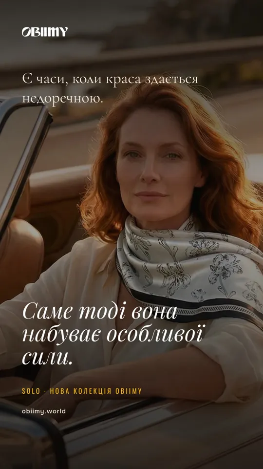
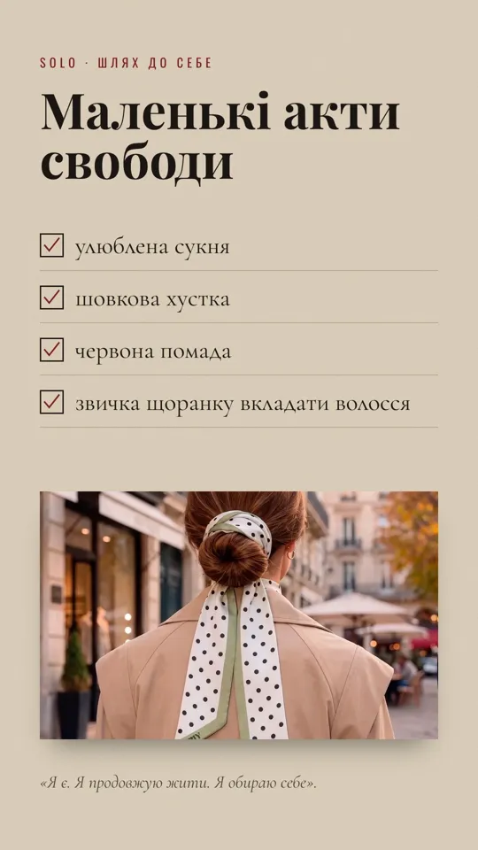
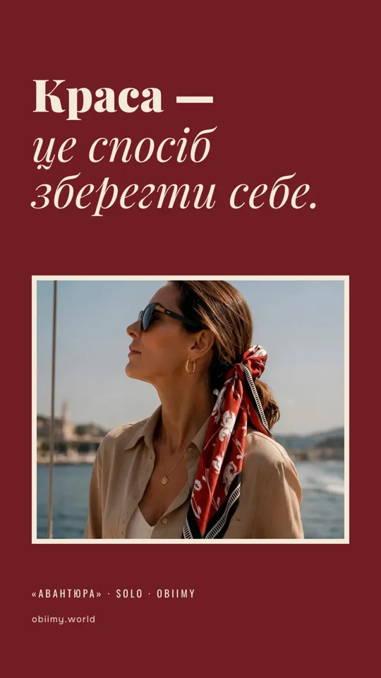
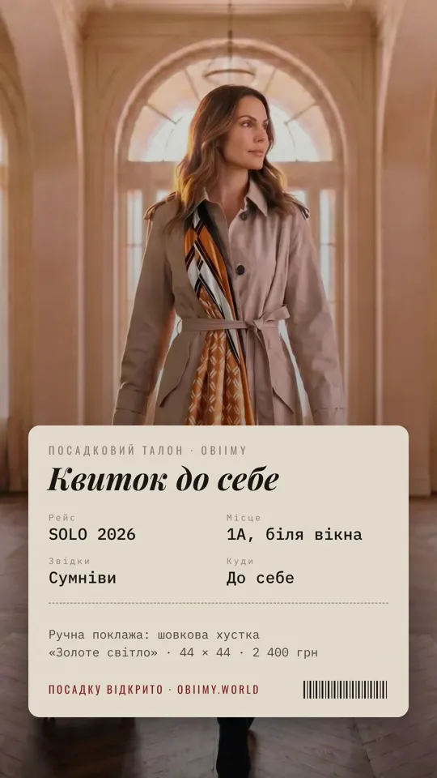
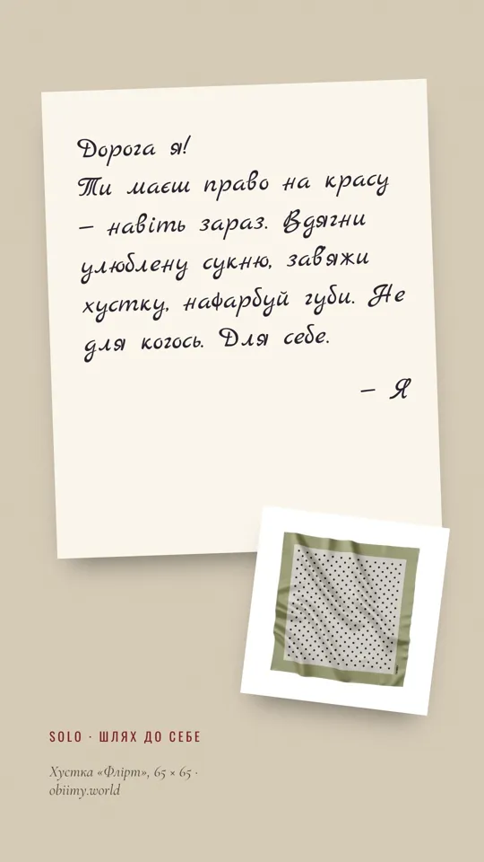
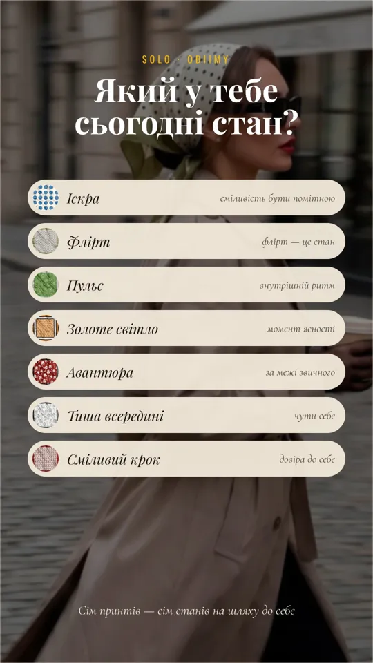
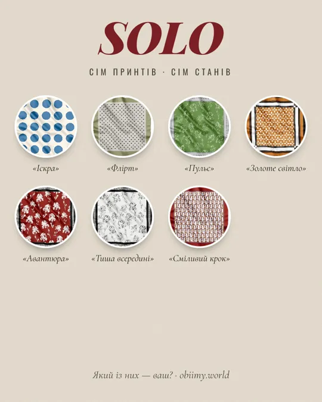
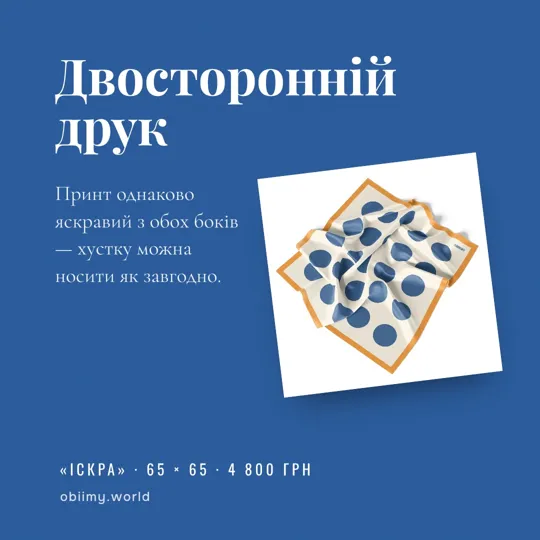
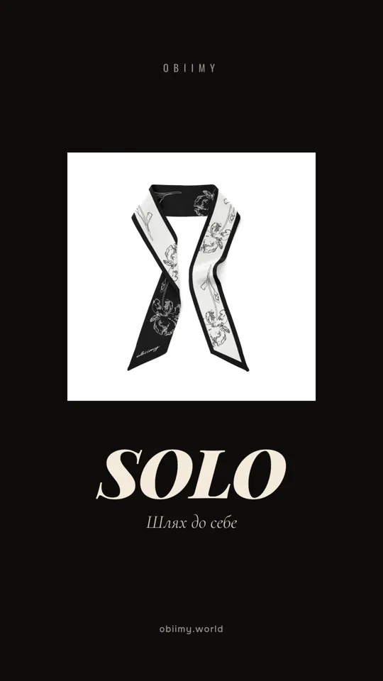
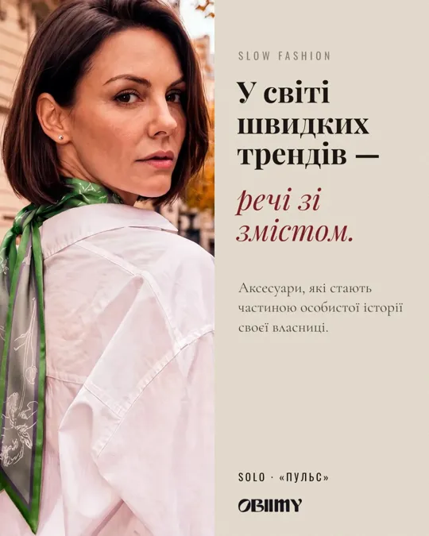

SOLO
Шлях до себе. 35 креативів для запуску нової колекції Obiimy: сім авторських принтів — сім станів на шляху жінки до себе. Тексти — за прес-релізом колекції, фото й ціни — з obiimy.world. Натисніть на картинку, щоб відкрити в повному розмірі (1080 px), або «JPG ↓», щоб завантажити.
Ретро-обкладинки
Колекція натхненна обкладинками модних журналів 40–50-х. Журнал SOLO: по одному випуску на кожен принт.


Обкладинка для сторіс
Той самий журнальний прийом у вертикальному форматі.
Карусель «Сім станів»
Сім принтів — сім станів на шляху жінки до себе. Опис кожного стану — з релізу.


Маніфести
Типографіка на цитатах з релізу: «Я є. Я продовжую жити. Я обираю себе», маленькі акти свободи, краса як спосіб зберегти себе.




Крізь десятиліття
1940-ті, 1950-ті, 2026: як хустка змінювалася разом із жінкою.

Кадр із фільму
Кіно 50-х: леттербокс, зерно, субтитри. «У головній ролі — ви».


Квиток до себе
Посадковий талон: рейс SOLO, звідки — сумніви, куди — до себе.

Жіночий вісник
Передовиця ретрогазети: «Жінка обирає себе. Знову».

Лист собі
Рукописна записка: право на красу навіть зараз.

Опитування
«Який у тебе сьогодні стан?» — сім принтів як варіанти відповіді для сторіс зі стікером-опитуванням.

Палітра
Сім принтів поруч: знайомство з колекцією одним кадром.

Каталог і ціни
Сторінка каталогу з форматами й роздрібними цінами з obiimy.world.

Як носити
Шия, волосся, сумка, зап’ястя — чотири способи з релізу.

Двосторонній друк
Технологія колекції: принт з обох боків.

Мінімалізм і slow fashion
Чистий знак колекції та меседж «речі зі змістом».


Попередні серії
20 сторіс для бренду Obiimy загалом.
Серія 1 · бренд
Перші 10 сторіс: маска, хустки, жовта коробка, двосторонній друк, «Співоча душа».


Серія 2 · Париж і Рив’єра
10 сторіс на фешн-зйомках: пояс із хустки, твіллі у волоссі, сумка, ритуал.